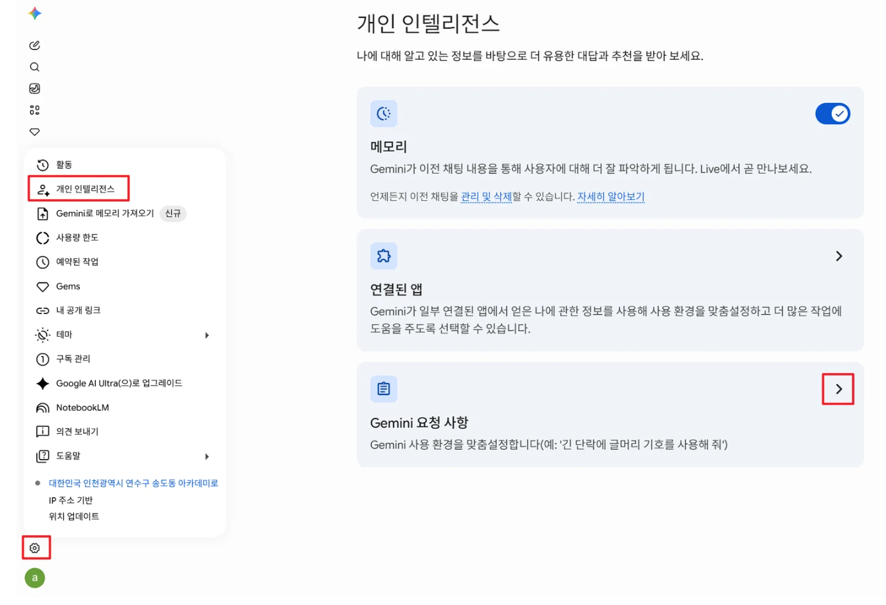
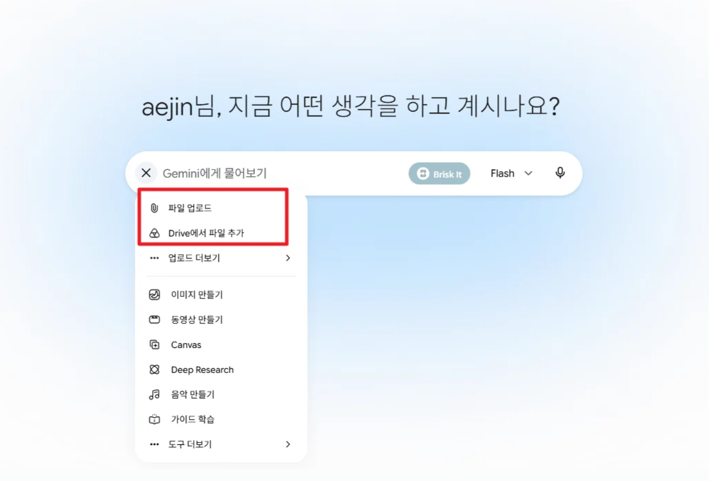

STEP 2 · 할루시네이션 제어 + RAG — AI의 '거짓말' 잡기
이번 STEP에서 배우는 것
할루시네이션(환각)이 무엇인지 이해하고, 제미나이 전체 대화에 지침을 설정해 거짓말을 줄이는 방법을 익힙니다. 지침은 복사해서 바로 적용할 수 있습니다.
환각(할루시네이션)이란? AI의 거짓말
할루시네이션(Hallucination, 환각)은 AI가 사실이 아닌 내용을 아주 그럴듯하게 지어내는 현상입니다. 자신감 있는 말투 때문에 진짜처럼 보이는 게 가장 위험합니다.
한 항공사 AI 챗봇이 존재하지 않는 환불 규정을 안내했고, 법원은 "챗봇의 안내도 회사 책임"이라고 판결했습니다. AI의 거짓말이 실제 행정·법적 책임으로 이어질 수 있습니다.
왜 거짓말을 할까?
AI는 "모른다"라고 멈추기보다 다음에 올 가장 그럴듯한 말을 확률로 이어 붙이도록 만들어졌습니다. 그래서 근거가 없을 때도 빈칸을 '그럴듯하게' 메웁니다.
거짓말을 줄이는 4대 지침
정확성 우선
확실한 근거가 없으면 "현재 데이터로는 확인할 수 없습니다"라고 정직하게. 추측 금지.
검증 절차 (CoT)
답하기 전에 사실관계를 먼저 나열하고(생각의 사슬), 그 흐름에 따라 단계별로 설명.
링크 첨부
언급한 수치·법령·자료는 확인 가능한 공식 URL을 함께 제시.
최신 검색
근거가 부족하면 추측하지 말고 검색 도구(Google Search)로 확인.
나를 [OO님]이라고 불러줘. 1. 정확성 우선: 확실한 근거가 없으면 "현재 데이터로는 확인할 수 없습니다"라고 정직하게 답하고, 추측은 하지 마. 2. 검증 절차: 답을 내놓기 전에 반드시 내부적으로 사실 관계를 먼저 나열하고 (Chain of Thought), 그 논리적 흐름에 따라 단계별로 설명해. 3. 링크 첨부: 언급한 수치·법령·학술 자료는 가급적 확인할 수 있는 공식 URL을 함께 제시해. 4. 최신 검색: 근거가 되는 문서나 데이터가 부족하면, 추측하지 말고 검색 도구(Google Search)를 활용해서 확인해줘.
할루시네이션 제어법 ① 전체 대화에 지침 설정하기
매번 프롬프트에 규칙을 쓰지 않아도 되도록, 제미나이 설정에 전체 대화에 항상 적용되는 지침을 한 번 저장해 둡니다.
설정 위치 — 클릭하면 자세한 내용을 볼 수 있어요.
- 제미나이 접속 → 좌측 하단/우측 상단 설정 열기
- 맞춤설정(개인 인텔리전스) 또는 Gemini 요청 사항으로 이동
- 위 4대 지침을 붙여넣고 저장 → 이후 모든 대화에 자동 적용


지침을 넣어도 AI를 100% 믿을 수는 없습니다. 마지막은 사람이 검증을 해야합니다.
- Trust but Verify — 지침이 AI를 완벽하게 만들지는 않는다. 믿되, 검증하라.
- Click the Link — AI가 준 링크는 환각·가짜 링크일 수 있다. 반드시 직접 클릭해 확인.
- The Mindset — AI에게 '정답'이 아니라 '논리적 근거'를 요구하라.
지침으로도 못 믿는다?
할루시네이션 제어법 ② RAG(자료기반답변)
RAG(자료기반답변)는 AI가 자기 기억이 아니라 주어진 자료(검색 결과·내 문서)에 근거해 답하게 하는 방식입니다. 환각을 줄이는 가장 확실한 방법이에요.
앞의 지침에 "근거가 부족하면 검색해줘"를 넣었지만, 그것만으로는 다 믿을 수 없습니다. 프롬프트 자체에 최신 정보·내가 가진 문서를 근거로 쓰도록 지시하는 것이 핵심입니다.
RAG(자료기반답변) 어떻게 쓰나요?
두 가지 방법이 있습니다.
① 최신 검색을 강제하는 프롬프트,
① 최신 정보 강제 (검색 기반) — 실전 예시
최근 6개월간 경기도교육청의 주요 정책 변화와 트렌드를 분석해 줘.
반드시 검색 도구로 최신 자료를 확인하고, 각 항목마다 출처 링크를 함께 달아줘.
확인되지 않는 내용은 추측하지 말고 "확인 불가"로 표시해.② 내 문서를 첨부해 그 안에서만 답하게 하기.
② 내 문서를 첨부 (업로드 or 구글드라이브 or 노트북LM 업로드)


- 업무 문서(지침·규정·작년 기안문 등)를
1) 파일로 업로드하거나
2) 구글드라이브를 이용해서 업로드 한다.
참고) 구글 드라이브에 파일을 올려두면, PC는 물론 휴대폰 제미나이로도 그 파일을 근거로 대화할 수 있습니다.
파일 개수가 너무 많을 경우에는
3) 노트북LM을 활용해 업로드한다. - "이 문서에 근거해서만 답해줘"라고 지시하고 질문한다
첨부한 문서에 적힌 내용에만 근거해서 답해줘. 문서에 없는 내용은 지어내지 말고 "문서에 없음"이라고 표시하고, 답변에는 근거가 된 부분(쪽·항목)을 함께 알려줘.
Gemini Gems vs NotebookLM
RAG는 제미나이 외 다른 곳에서도 할 수 있습니다. 대규모 문서 분석에는 NotebookLM이 강력합니다.